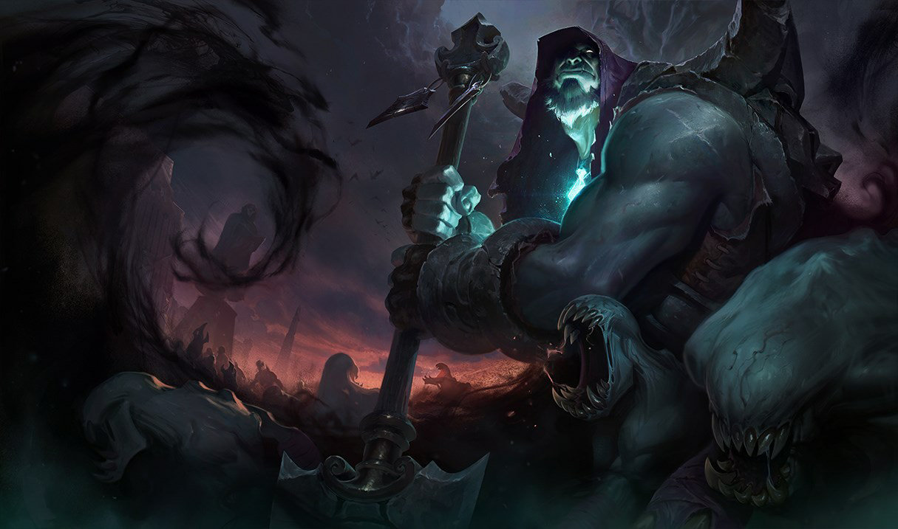
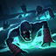

SHEPHERD OF SOULS
YORICK
YORICK
ABILITIES

Pasive
Shepherd of Souls
The Cursed Horde: Yorick can summon Mist Walkers to swarm and attack nearby enemies.

Ability Q
Last Rites
Yorick deals bonus damage on his next attack and heals himself. If the target dies a grave will be dug.

Ability W
Dark Procession
Yorick summons a destructible wall at target location that will block enemy movement.

Ability E
Mourning Mist
Yorick throws a globule of Black Mist that damages, slows and marks enemies.

Ability R
Eulogy of the Isles
Yorick summons the Maiden of the Mist that causes Yorick's attacks against the Maiden's target to deal bonus damage. The Maiden will also automatically raise Walkers from dead enemies.